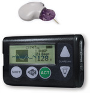
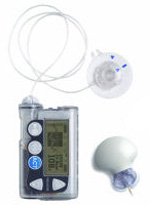

Guardian REAL-Time
Continuous Glucose Monitoring System |
| |
 |
| Price |
$1339 for monitor, transmitter, charger, and 4 sensors
$35 per sensor |
| Weight |
2.8 oz |
| Screen Size |
approx 1.8" x 0.75" |
Monitor Size
(L x W) |
3" x 2" |
Transmitter/
Sensor Size
(LxWxH) |
1.64" x 1.4" x 0.37" |
| Sensor Life |
3 days |
Sensor
Canula size |
14 mm |
Angle of
Sensor Insertion |
45º |
| Insertion Device |
Sens-serter, manual insertion possible |
Start-Up
Initialization
Time |
2 hours |
| Calibration |
2 hours after insertion, within next 6 hours after first, then every 12 hours. Will alarm if calibration value not entered. |
User set alarms
on low/high |
Yes, 8 different thresholds users can set for different times throughout day and night, different sounds for each alarms, loud backup alarm |
Predictive alarms
for low/high |
Yes, can be set to warn 5-30 minutes before glucose limit has been reached |
Alarms for rate
of change |
Yes, can be set to warn at rates of change from 1.1 mg/dL per minute to 5 mg/dL per minute |
Displays glucose
numbers |
Every 5 minutes |
Displays
Directional
Trends |
Yes, 3, 6, 12, and 24 hour graphs |
Displays Rate
of Change |
Yes |
Review
glucose data? |
Yes, last 24 hours |
| Capture events |
Yes, user can enter insulin, carbs, BGs, and exercise events |
Alarms, vibrates,
or both |
Vibrate, escalating alarm, or both |
Waterprooof
Transmitter |
Yes, hot water not suggested |
Transmitter
Batteries |
Rechargeable, 14 days or more use per change, 1 year expected life, additional transmitter and charger $649 |
Monitor
Batteries |
1 AAA |
| Range |
6 feet |
Snooze
Alarm |
Yes, High snooze can be set from 5 min to 3 hrs, Low snooze between 5 minutes and 1 hour |
| BG Monitor |
Any |
Computer
Software |
Medtronic CareLink Personal |
Upgrade
program |
Yes, call 1-800-Minimed for info |
| Warranty |
1 year on monitor, 6 months on transmitter |
Money-back
gaurantee |
30 day, not for sensors |
| MiniMed Paradigm® REAL-Time System |
| |
 |
| Price |
$999 in addition to initial pump cost, $35 per 3 day sensor |
| Weight |
4 oz |
| Screen Size |
522/722 screen |
Monitor Size
(L x W) |
No Monitor, displays on pump |
Transmitter/
Sensor Size
(LxWxH) |
2" x 1.5" / 0.75" diameter |
| Sensor Life |
3 days |
Sensor
Canula size |
14 mm |
Angle of
Sensor Insertion |
45º |
| Insertion Device |
Sens-serter, manual insertion possible |
Start-Up
Initialization
Time |
2 hours |
| Calibration |
2 hours after insertion, within next 6 hours after first, then every 12 hours. Will alarm if calibration value not entered. |
User set alarms
on low/high |
Yes, differents sounds for each alarm, loud back up alarm |
Predictive alarms
for low/high |
10, 20, 30 minutes |
Alarms for rate
of change |
|
Displays glucose
numbers |
Every 5 minutes |
Displays
Directional
Trends |
Yes, 3 and 24 hour graphs |
Displays Rate
of Change |
Yes |
Review
glucose data? |
Yes, last 24 hours |
| Capture events |
|
Alarms, vibrates,
or both |
Vibrate, escalating alarm, or both |
Waterprooof
Transmitter |
Yes, hot water not suggested |
Transmitter
Batteries |
9 months, additional transmitter $500 |
Monitor
Batteries |
1 AAA |
| Range |
6 feet |
Snooze
Alarm |
Yes, both high and low alarms settings differ |
| BG Monitor |
Any |
Computer
Software |
Medtronic CareLink Online |
| Warranty |
6 months on transmitter, 4 years on pump |